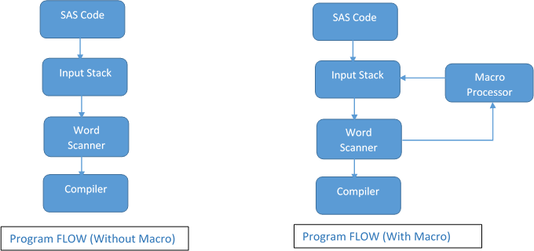

Introducing Macro Variables
Basic ConceptsLink
Macro variables substitute text into your SAS programs. The macro facility enables you to create and resolve macro variables anywhere within a SAS program. There are two types of macro variables: automatic macro variables, which SAS provides, and user-defined macro variables, which you create and define.
Automatic Macro VariablesLink
Automatic macro variables contain system information such as the date and time that the current SAS session began. Some automatic macro variables have fixed values that SAS defines when the session starts. This table shows several common automatic macro variables:
| Name | Description | Example |
|---|---|---|
| SYSDATE | Date when the current SAS session began (DATE7.) | 16JAN13 |
| SYSDATE9 | Date when the current SAS session began (DATE9.) | 16JAN2013 |
| SYSDAY | Day of the week when the current SAS session began | Friday |
| SYSSCP | Abbreviation for the operating system being used | OS, WIN, HP 64 |
| SYSTIME | Time that the current SAS session began | 13:39 |
| SYSUSERID | The user ID or login of the current SAS process | MyUserid |
| SYSVER | Release of SAS software being used | 9.4 |
Other automatic macro variables have values that change automatically, based on the SAS statements that you submit.
| Name | Description |
|---|---|
| SYSLAST | Name of the most recently created data set in the form libref.name (the value is _NULL_ when none has been created) |
| SYSPARM | Value specified at SAS invocation |
| SYSERR | SAS DATA or PROC step return code (0=success) |
| SYSLIBRC | LIBNAME statement return code (0=success) |
Creating User-defined Macro VariablesLink
You use the %LET statement to create a macro variable and assign a value to it. Macro variable names start with a letter or an underscore and can be followed by letters, digits, or underscores. The prefixes AF, DMS, SQL, and SYS are not recommended because they are frequently used in SAS software when creating macro variables. If you assign a macro variable name that isn't valid, SAS writes an error message to the log.
When assigning values to macro variables in the %LET statement, SAS does the following:
- Stores all macro variable values as text strings, even if they contain only numbers
- Doesn't evaluate mathematical expressions in macro variable values
- Stores the value in the case that is specified in the
%LETstatement - Stores quotation marks as part of the macro variable value
- Removes leading and trailing blanks from the macro variable value before storing it
- SAS doesn't remove blanks within the macro variable value
To reference a user-defined macro variable, you precede the name of the macro variable with an ampersand (¯ovariable). When you submit the program, the macro processor resolves the reference and substitutes the macro variable's value before the program compiles and executes.
Tip
If you need to reference a macro variable within quotation marks, such as in a title, you must use double quotation marks.
Macro variables remain in the global symbol table until they are deleted or the session ends. To delete macro variables, you use the %SYMDEL statement followed by the name or names of the macro variables that you want to delete.
Displaying Macro Variables in the SAS LogLink
There are several methods that you can use to display the values of macro variables in the SAS log.
Using the %PUT StatementLink
You can use the %PUT statement to write your own messages, including macro variable values, to the SAS log: %PUT The value of the macro variable is: ¯ovar; or %PUT &=macrovar;.
You can add one of the following optional arguments to the %PUT statement:
%PUT <text | _ALL_ / _AUTOMATIC_ / _USER_>;
| Argument | Result in the SAS Log |
|---|---|
_ALL_ |
Lists the values of all macro variables |
_AUTOMATIC_ |
Lists the value of all automatic macro variables |
_USER_ |
Lists the values of all user-defined macro variables |
Using the SYMBOLGEN system optionLink
You can also use the SYMBOLGEN system option to display the values of macro variables.
1 | OPTIONS SYMBOLGEN | NOSYMBOLGEN; |
The default option is NOSYMBOLGEN. When you turn the SYMBOLGEN system option on, SAS writes macro variable values to the SAS log as they are resolved. The message states the macro variable name and the resolved value.
Because SYMBOLGEN is a system option, its setting remains in effect until you modify it or until you end your SAS session.
Processing Macro VariablesLink
When you submit a SAS program, it's copied to an area of memory called the input stack. The word scanner reads the text and breaks the text into fundamental units, called tokens, and passes the tokens, one at time, to the appropriate compiler upon demand. The compiler requests tokens until it receives a semicolon and then performs a syntax check on the statement. The compiler repeats this process for each additional statement.

SAS suspends compilation when a step boundary (RUN statements or the beginning of a new DATA/PROC step) is encountered. If there are no compilation errors, SAS executes the compiled code. This process is repeated for each program step. A token is the fundamental unit that the word scanner passes to the compiler. The word scanner recognizes the four classes of tokens shown in the table below.
| Class | Description | Example |
|---|---|---|
| name | A character string that begins with a letter or underscore and continues with underscores, letters, or numerals | infile _n_ dollar10.2 |
| special | Any character, or combination of characters, other than a letter, numeral, or underscore | * / + ** ; $ ( ) . & % |
| literal | A string of characters enclosed in single or double quotation marks | 'Report for May' "Sydney Office" |
| number | Integer numbers, including SAS date constants or floating point numbers, that contain a decimal point and/or an exponent | 23 109 5e8 42.7 '01jan2012'd |
Certain token sequences, known as macro triggers, alert the word scanner that the subsequent code should be sent to the macro processor. The word scanner recognizes the following token sequences as macro triggers and passes the code to the macro processor for evaluation:
- A percent sign followed immediately by a name token (such as
%LET) - An ampersand followed immediately by a name token (such as
¯ovar)
A macro variable reference triggers the macro processor to search the symbol table for the reference. The macro processor resolves the macro variable reference by replacing it with the value in the symbol table.
Using Double Quoting to Reference Macro VariablesLink
You need to use double quotes, not single, to reference a macro variable in the code, otherwise the macro variable won't be resolved by the Macro Processor.
1 2 3 4 5 6 7 8 9 10 11 | %LET firstletter = a; PROC PRINT DATA=SAS-dat-set; WHERE letter='&firstletter'; RUN; /* Wrong */ PROC PRINT DATA=SAS-dat-set; WHERE letter="&firstletter"; RUN; /* Correct */ |
Referencing Macro Variables Using .Link
A period . is used as delimiter that defines the end of a macro variable. It is usually not necessary but there are cases on which it can be really useful.
1 2 3 4 5 6 7 8 9 | %LET firstletter = a; %LET thirdletter = c; %LET abc = &firstletterb&thirdletter; /* Wrong */ /* WARNING: Apparent symbolic reference FIRSTLETTERB not resolved. */ %LET abc = &firstletter.b&thirdletter; /* Correct */ |
You can even need to use two . in certain cases:
1 2 3 4 5 | %LET library = library-name; %LET dataset = dataset-name; PROC PRINT DATA=&library..&dataset; RUN; |